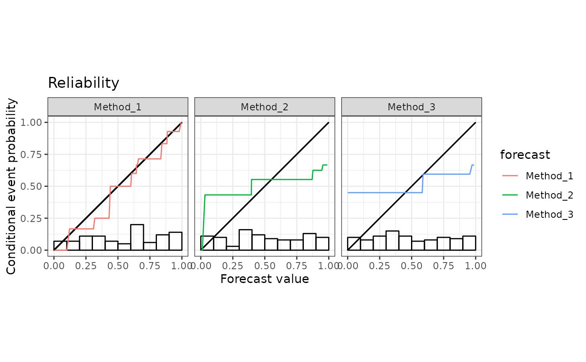
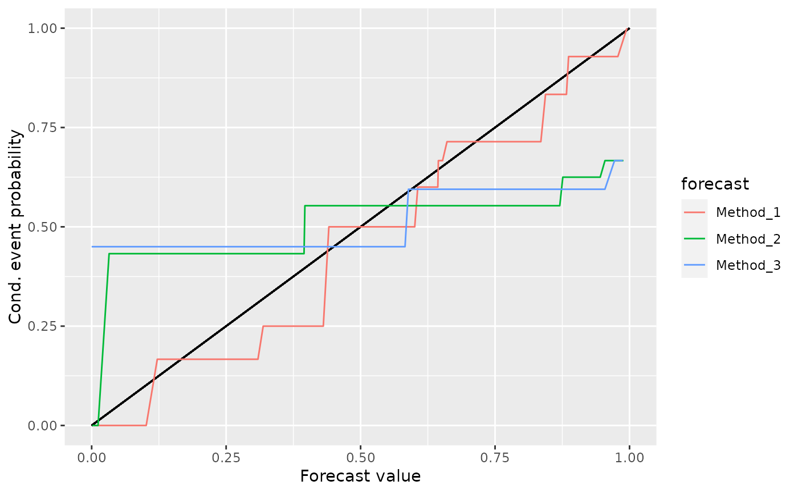

A reliability curve visualizes miscalibration by displaying the (isotonic) conditional event probability against the forecast value.
Arguments
- x
A data frame, list, matrix, or other object that can be coerced to a tibble. Contains numeric forecasts, and observations (optional).
- y_var
A variable in
xthat contains observations. Specified as the argumentvarindplyr::pull().- ...
Unused.
- y
A numeric vector of observations. If supplied, overrides
y_var. Otherwise, defaults todplyr::pull(x, y_var).- r
A reference triptych_mcbdsc object whose attributes are used for casting.
Value
A triptych_reliability object, that is a vctrs_vctr subclass, and has
a length equal to number of forecasting methods supplied in x. Each entry
is named according to the corresponding forecasting method,
and contains a list of named objects:
estimate: A data frame with the isotonic regression estimate.region: Either an empty list, or a data frame of pointwise consistency or confidence intervals added byadd_consistency()oradd_confidence(), respectively.x: The numeric vector of original forecasts.
Access is most convenient through estimates(), regions(), and forecasts().
See also
Accessors: estimates(), regions(), forecasts(), observations()
Adding uncertainty quantification: add_confidence()
Visualization: plot.triptych_reliability(), autoplot.triptych_reliability()
Examples
data(ex_binary, package = "triptych")
rel <- reliability(ex_binary)
rel
#> <triptych_reliability[10]>
#> X01 X02 X03 X04 X05
#> <named list[3]> <named list[3]> <named list[3]> <named list[3]> <named list[3]>
#> X06 X07 X08 X09 X10
#> <named list[3]> <named list[3]> <named list[3]> <named list[3]> <named list[3]>
# 1. Choose 4 predictions
# 2. Visualize
# 3. Adjust the title of the legend
rel[c(1, 3, 6, 9)] |>
autoplot() +
ggplot2::guides(colour = ggplot2::guide_legend("Forecast"))

# Build yourself using accessors
library(ggplot2)
df_est <- estimates(rel[c(1, 3, 6, 9)])
ggplot(df_est, aes(x = x, y = CEP, col = forecast)) +
geom_segment(aes(x = 0, y = 0, xend = 1, yend = 1)) +
geom_path()
